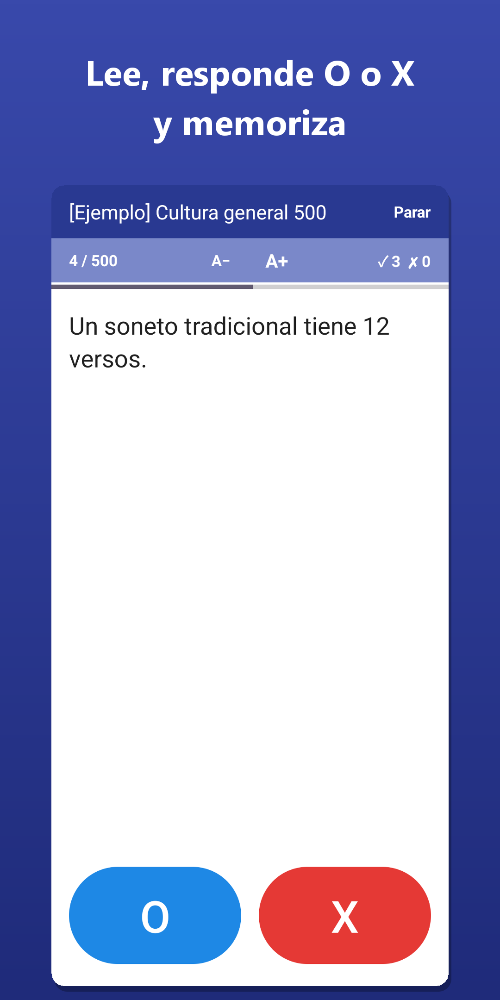
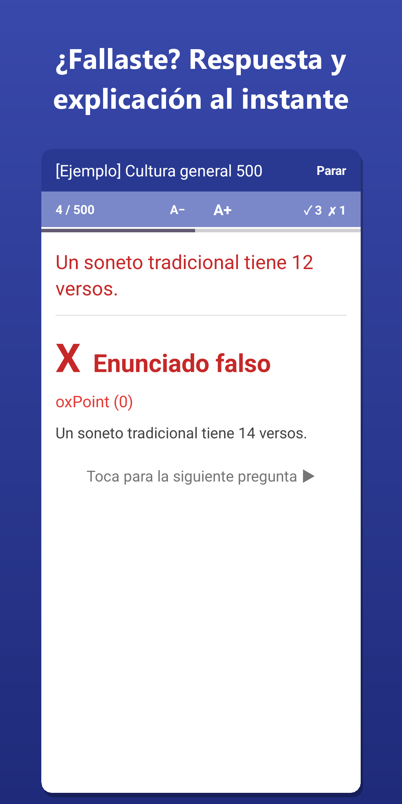
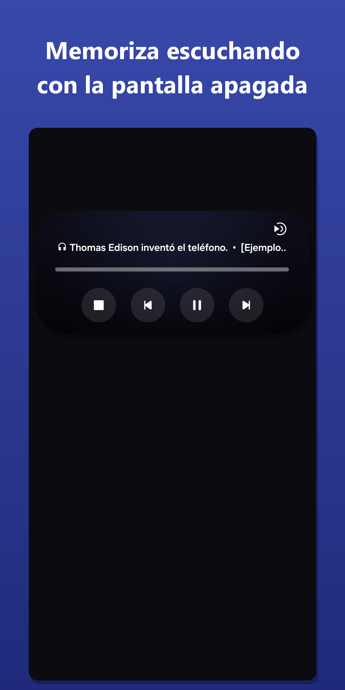
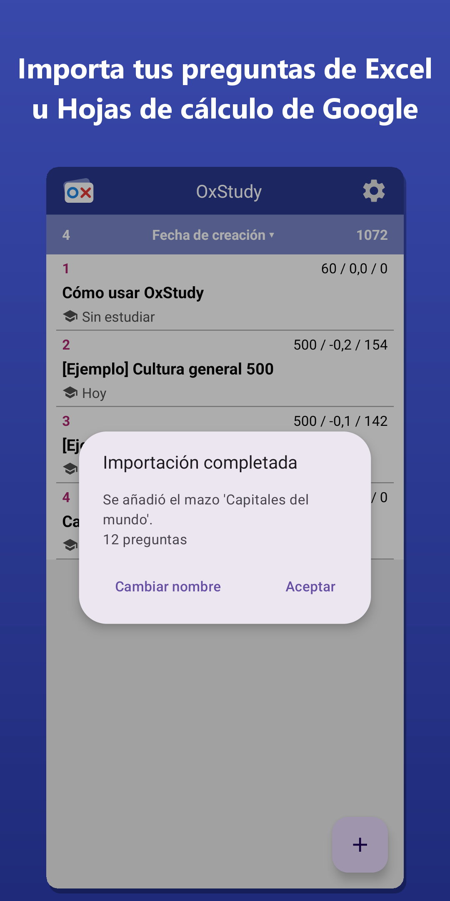

Apuntes de Medicina, enunciados de examen, significados de palabras, cultura general… todo lo que se pueda comprobar como verdadero o falso se convierte en un mazo de OxStudy.
Ideal para
- Medicina: Fisiología, Patología y Farmacología
- Oposiciones: test de la Constitución y del temario
- Exámenes del instituto y la universidad
- Quiz de verdadero o falso, vocabulario y conceptos
- Coreano para el EPS-TOPIK y el TOPIK
- Repasar escuchando en el transporte
Cinco modos
Modo Test
Toca O o X dentro del tiempo límite (5–40 segundos). Si fallas, ves la respuesta y la explicación, y al final puedes repetir solo las preguntas falladas.
Modo Lista
Lee las preguntas con sus respuestas y explicaciones, como un libro. Arrastra el control de la derecha para saltar a cualquier punto.
Modo Tarjetas
Tarjetas que pasan solas, al ritmo de la longitud de cada una.
Modo Audio
Lee en voz alta el enunciado, la respuesta y la explicación (de 1x a 2x). Sigue leyendo con la pantalla apagada y tiene temporizador para dormir.
Modo Edición
Añade preguntas, corrige erratas y busca.
Primero las preguntas más débiles: oxPoint
Cada pregunta tiene un oxPoint: +1 si aciertas en un test, −1 si fallas o se acaba el tiempo. Elige solo las que peor sabes, como «−2 o menos», o solo las que aún no has hecho.
Crea mazos en Excel o en Hojas de cálculo de Google
Escribe en la columna A los enunciados, en la B la respuesta (O/X) y en la C la explicación, e importa el archivo de Excel (.xlsx) o la hoja de Google. Puedes exportar una plantilla vacía desde la app.
| A: Enunciado | B: Respuesta | C: Explicación |
|---|---|---|
| El agua hierve a 100 °C a 1 atmósfera. | O | Al nivel del mar (1 atm). |
| El Sol es un planeta. | X | El Sol es una estrella. |
Mazos de ejemplo incluidos
- Medicina: Fisiología 100, Patología 100 y Farmacología 100 (todas las preguntas con explicación)
- Cultura general 300, Ciencias 300
- Mazo de prueba de 20 preguntas: Constitución Española (en España) o Historia de América Latina (en otros países)
- Coreano EPS-TOPIK, 100 de verdadero o falso (explicaciones en español)
Los mazos de ejemplo son para practicar y no se garantiza que su contenido sea exacto.
Además
- Comparte mazos como archivos .oxstudy y haz copias de seguridad con tu historial de estudio
- Tamaño del texto del 90 % al 400 %
- Idiomas: Español, English, 한국어, 日本語, Tiếng Việt, 繁體中文
- Teléfonos y tabletas
- Gratis con anuncios. Nunca aparecen anuncios mientras respondes ni mientras se reproduce el modo Tarjetas o Audio. Tus mazos se guardan solo en tu teléfono.